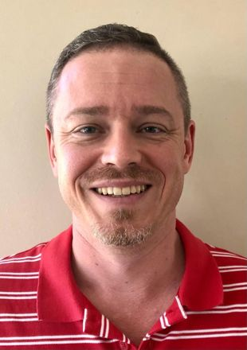

The team
People
The VAPAR learning platform is a long-term collaboration across communities, the Mpumalanga Department of Health, and universities in South Africa, Scotland and Sweden.

LUCIA D'AMBRUOSO
Principal Investigator
Senior Lecturer, University of Aberdeen

SOPHIE WITTER
Co-Principal Investigator
Professor, Queen Margaret University, Edinburgh

PETER BYASS
Co-Principal Investigator, Professor, Umeå University
Peter sadly died in August 2020 — read our tribute

GERHARD GOOSEN
Co-Investigator
Senior Clinical Manager DCST, Mpumalanga Department of Health

JENNIFER HOVE
Post-Doctoral Research Fellow
University of the Witwatersrand

KATHLEEN KAHN
Co-Investigator
Professor, University of the Witwatersrand

DENNY MABETHA
Methodologist
Scientist, South African MRC

NOMBUYISELO NKALANGA
Project Coordinator
Public Engagement Lead, University of the Witwatersrand
JERRY SIGUDLA
Co-Investigator
Provincial Research Director, Mpumalanga Department of Health

STEVE TOLLMAN
Co-Investigator
Professor, University of the Witwatersrand

RHIAN TWINE
Co-Investigator
Coordinator, Tshemba Foundation

MARIA VAN DER MERWE
Co-Investigator
Director, Independent Consultant